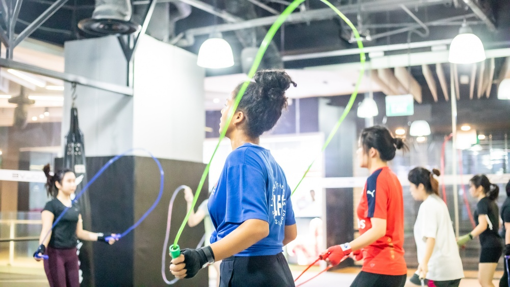
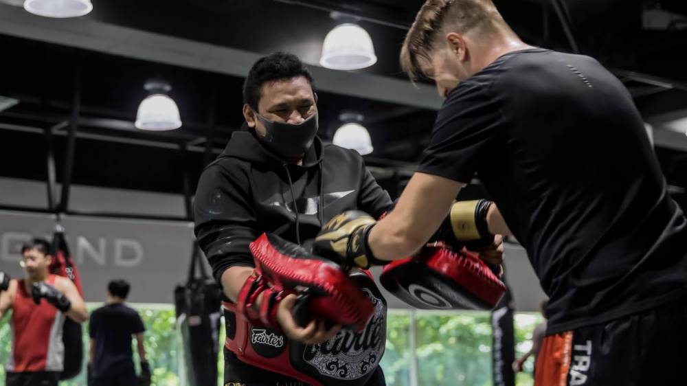
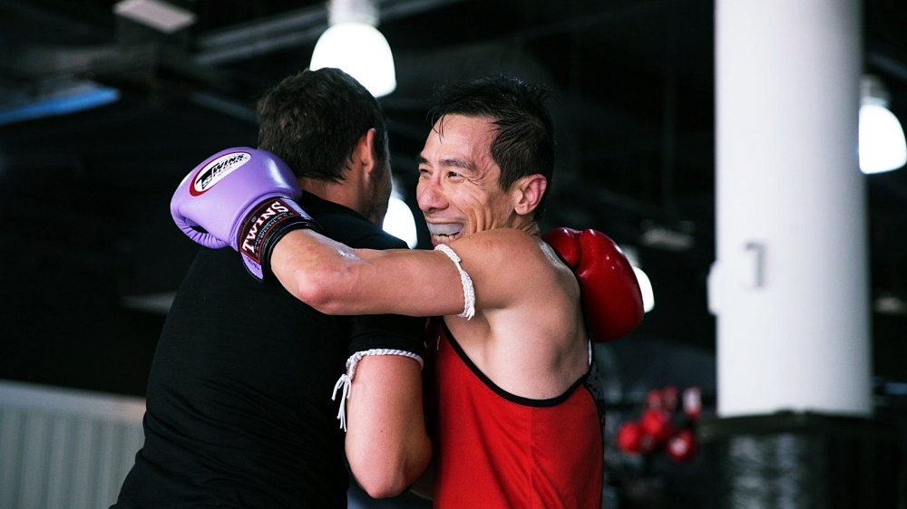
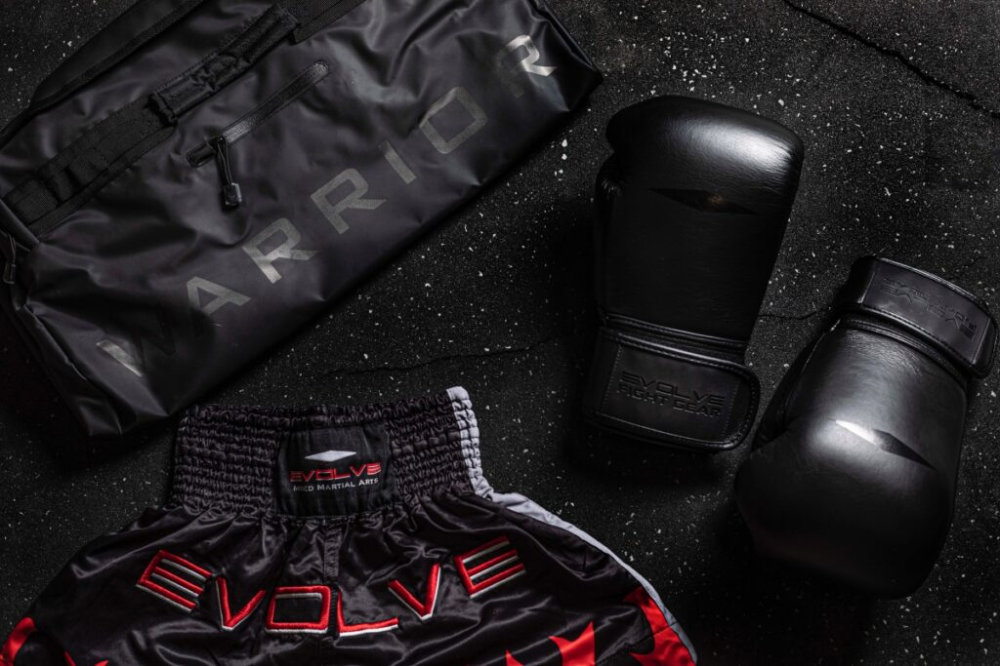

MMA gyms can be intimidating for newcomers, but you will find they are welcoming places if you conduct yourself the right way.
Most do not have a formal code of conduct, but they do have a few unwritten rules wherever they are in the world. Sticking to these
guidelines will show the appropriate respect to your coaches and training partners, and will help you fit right in
wherever you train, including a MMA gym in McAllen like Warrior Fit MMA.

TURN UP ON TIME
Make sure you arrive at the gym in time for the start of the class, ready to train.
It would be considered rude or disrespectful for you to turn up late to a job or social engagement, so why should martial arts practice
be any different? Whether you’re training to fight or you’re just a Muay Thai hobbyist, you owe it to your coach, your teammates, and yourself
to be punctual. If you run onto the mats five minutes after the start of class, you’ll disrupt the lesson and will waste everyone’s time while
they wait for you to catch up on what you’ve missed. You’re also likely to miss valuable warm-up time, which could lead to injury.

LISTEN TO YOUR COACH
It’s just plain rude to not pay attention to your coach. They are the fountain of all your martial arts knowledge, and they demand your respect.
Most trainers don’t mind having to explain a technique or concept several times – especially if it’s difficult, complex, or unfamiliar – but not
if it’s because you didn’t listen to them the first time.
You can chat about what you saw on TV last night after class, not while your instructor
tells you what to do or how to do it. If you’re not focused on what you’re being shown, not only will you make your coach angry, you’ll end up doing
something wrong. That could mean you pick up some bad habits that could stay with you for a long time. You’re paying your hard-earned cash to learn
from your coach, so try to absorb whatever knowledge they share with you.

TREAT YOUR PARTNERS THE WAY YOU WANT TO BE TREATED
MMA gyms should create a welcoming environment where anyone can come and learn the art of eight limbs, so help to keep it that way.
In mixed-ability sessions, you might be partnered with someone with less experience, so don’t get frustrated with them if they can’t hold
pads for 12-strike combinations.
Everyone was a beginner once, so remember what it was like when you started. Try to guide them through the process. Once they get the
hang of things, they’ll become a valuable training partner.
If you’re a newbie and pair up with someone who’s far more experienced, try to relax and listen to their advice. Overall, just be friendly
to everyone. It’s not okay to be antisocial or behave inappropriately anywhere. If you do so in the gym and dissuade anyone from coming back,
you might be asked to leave, too.

BRING THE CORRECT EQUIPMENT
No one expects a total newcomer to turn up to their first class with a bag full of equipment. It’s perfectly reasonable to turn up in shorts and
a T-shirt and borrow some gloves when you first start out. However, as you get into the swing of things, you’ll want to get a full range of
gear – not least because you’ll soon get sick of pulling on those smelly old communal gloves. Make sure you have at least one pair of gloves,
including a larger pair for sparring (a lot of gyms suggest 14 – 16oz). You’ll also need shin guards for any drills that require checking, and for
sparring. Groin guards and mouth guards are also essential. Finally, consider whether you need compression underwear. Muay Thai shorts are loose-fitting,
and no one wants to get an eyeful of what lies underneath!